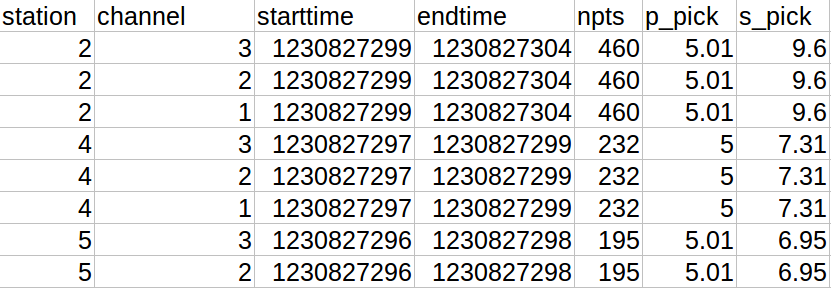
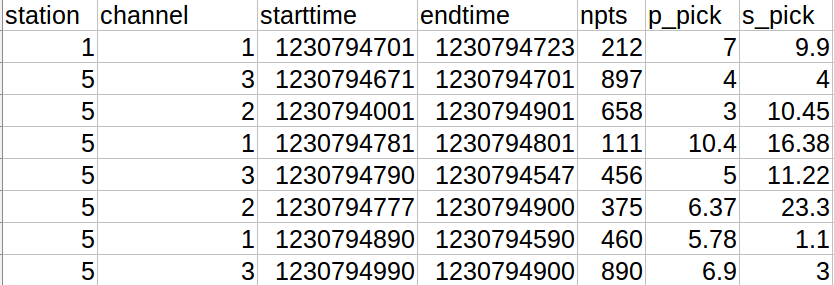

The input data for the model is in SAC format.The SAC file format contains the timeseries data. We have used Obspy library to read the SAC file.
To convert SAC file to training data sets we have used
Triggering Algorithms(Recursive STA/LTA)
Picker Algorithm(To calculate P-pick and S-Pick)
The output from the picker algorithm is then saved into a CSV file (Training Dataset) with Event Starttime, Event Endtime, P-Pick and S-pick
Machine Learning Model Implementation
We have implemented three different machine learning models to detect aftershocks if there are any. Three different model are:
Random Forest Classifier
Decision Tree Classifier
Support Vector Machine
Each model mentioned above has both advantages and disadvantages. From the results we got from three models Random Forest classifier provides better accuracy and greatly reduces overfitting problem.
×
To Predict if there is any earthquake we have used random forest algorithm
The input to the model for prediction consists of features :
Location
Station
Channel
Event Starttime and Event Endtime
P-pick and S-pick Values
Sampling points
Following are the samples for earthquake and non earthquake data


If we consider manual decision making, prediction will be done based on following factors
Time difference between event start time and event end time
P-pick and S-pick values
Similar decison making is implemented using machine learning algorithm which makes use of several such decision tree to make a prediction thus by increases accuracy
Earthquake Prediction Model Sample trees
Following are the sample decision trees from Decision Tree CLassifier and Random Forest Classifier